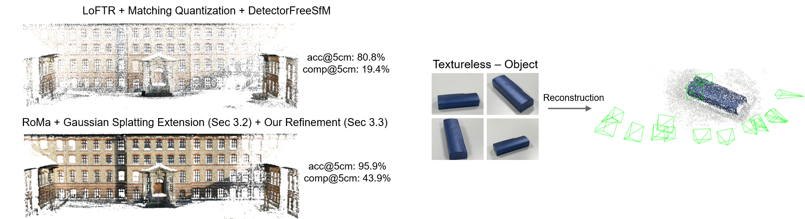
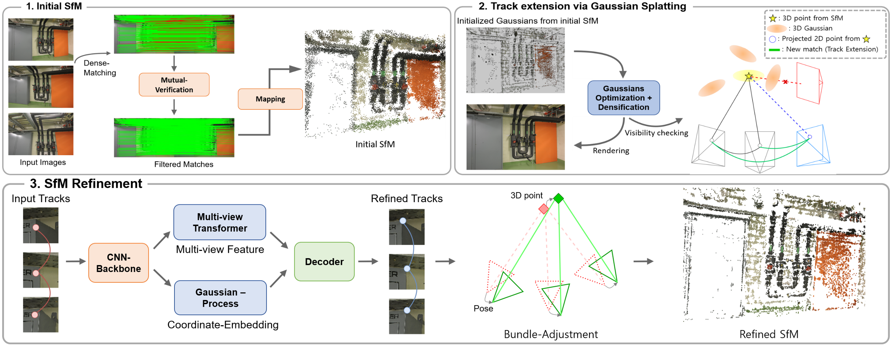
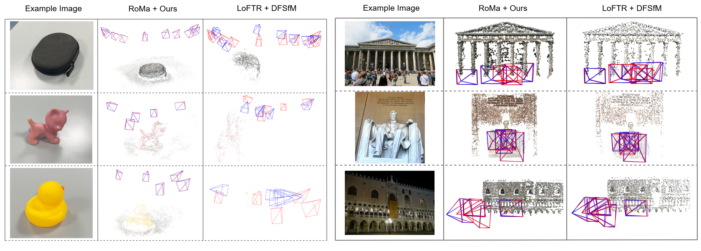

We present Dense-SfM, a novel SfM framework that integrates dense feature matching for accurate and dense 3D reconstruction from multi-view images. To resolve the track fragmentation problem inherent in pairwise dense matching, Dense-SfM leverages Gaussian Splatting to reason about 3D point visibility and extend short tracks to additional views — without sacrificing subpixel accuracy. The extended tracks are then refined by a novel multi-view kernelized matching module combining transformer and Gaussian Process architectures, followed by iterative bundle adjustment.

Stage 1
Dense pairwise matches (DKM / RoMa) filtered by mutual bidirectional verification build an initial SfM with short, mostly two-view tracks.
Stage 2
3D points are treated as small Gaussians. After GS optimization, visibility-based projection extends each track to additional co-visible images.
Stage 3
A multi-view kernelized matching module (transformer + Gaussian Process) refines track coordinates, followed by geometric bundle adjustment.


Left: Qualitative Results on Texture-Poor SfM dataset.
Right: Qualitative Results on IMC 2021 dataset.
There are excellent works that are related with ours and gave us inspiration.
Detector-Free SfM proposes a detector-free structure from motion framework that eliminates the requirement of keypoint detection and can recover poses even on challenging texture-poor scenes.
DKM and RoMa propose a significantly robust dense feature matcher.
@misc{lee2025densesfmstructuremotiondense,
title={Dense-SfM: Structure from Motion with Dense Consistent Matching},
author={JongMin Lee and Sungjoo Yoo},
year={2025},
eprint={2501.14277},
archivePrefix={arXiv},
primaryClass={cs.CV},
url={https://arxiv.org/abs/2501.14277},
}